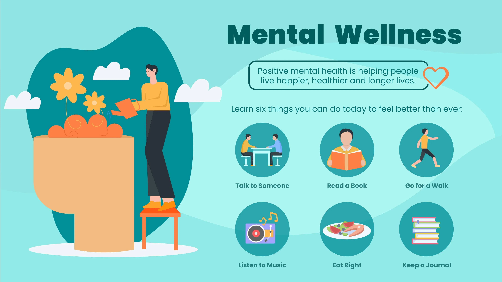
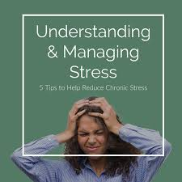
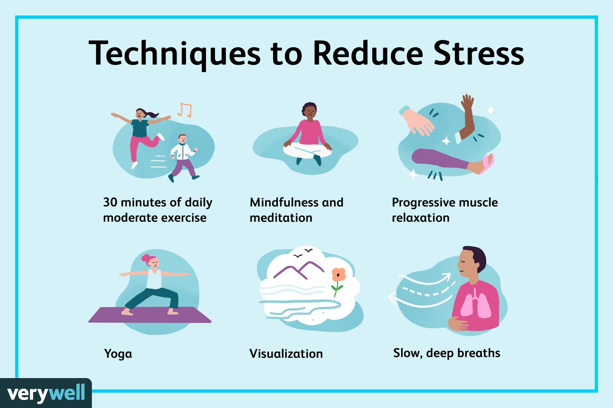

Mental Health Resource Hub
Explore our collection of helpful resources including educational articles, videos, and infographics to support your journey towards better mental well-being.
📚 Educational Articles
You Are not alone
Find someone you trust to speak with and share all the saddness with
Positive Mental health


Stress Management
Stress management refers to a range of techniques and strategies used to control a person's level of stress, especially chronic stress, with the goal of improving daily functioning. Effective stress management involves identifying stressors, developing healthy coping mechanisms, and prioritizing self-care.
.jfif.jpg)
Stress negatives
Stress, both acute and chronic, can negatively impact physical and mental health. Physically, it can manifest as headaches, muscle pain, digestive issues, and even contribute to heart problems and weakened immunity. Mentally, stress can lead to anxiety, depression, difficulty concentrating, and changes in behavior like social withdrawal or increased substance use. Long-term stress can also affect sleep, libido, and even lead to memory problems.
